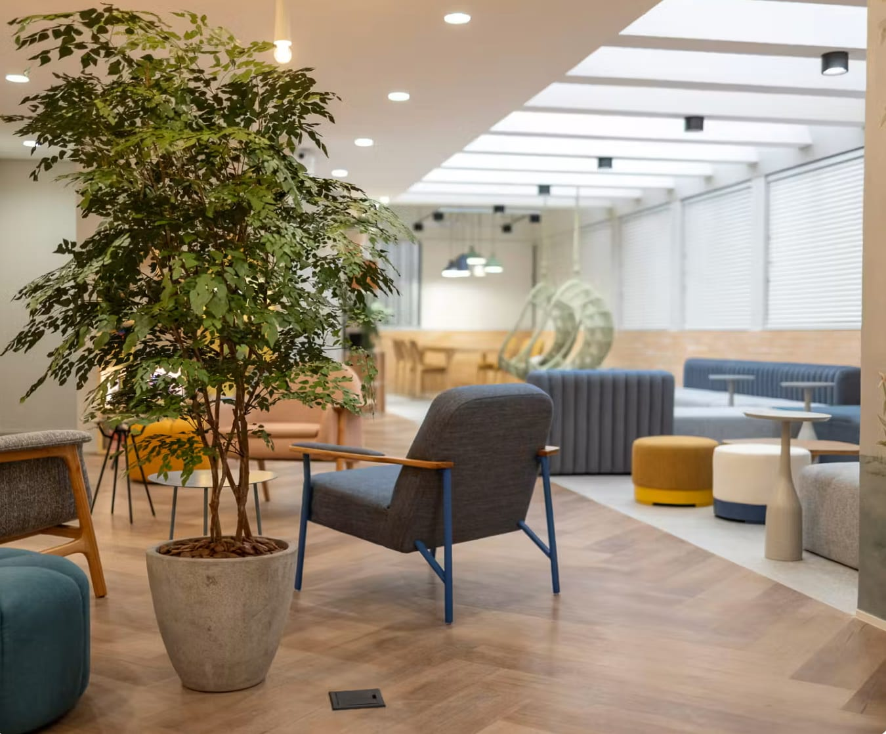
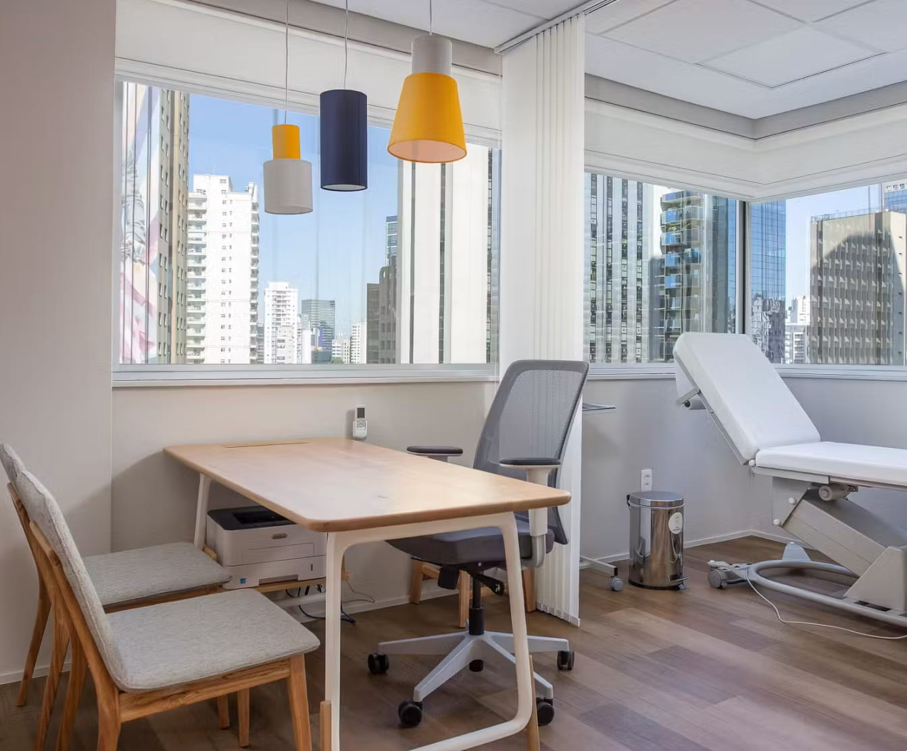

Tatuapé
Atendimento presencial na zona leste de São Paulo.
R. Vilela, 665, 8º andar, Tatuapé, São Paulo, SP. A equipe envia as orientações de chegada no agendamento.
Atendimento
Consultório de Nutrologia e Medicina do Esporte, voltado a emagrecimento, saúde metabólica, composição corporal e desempenho físico. O atendimento presencial acontece em dois endereços de São Paulo, no Tatuapé e em Pinheiros, e também por telemedicina, que é a consulta médica feita a distância, por vídeo.
Atendimento presencial na zona leste de São Paulo.
R. Vilela, 665, 8º andar, Tatuapé, São Paulo, SP. A equipe envia as orientações de chegada no agendamento.
Atendimento presencial na zona oeste de São Paulo.
Av. Brigadeiro Faria Lima, 1461, 6º andar, Pinheiros, São Paulo, SP. A equipe envia as orientações de chegada no agendamento.
Consulta por telemedicina, para quem está distante ou prefere o atendimento a distância.
Link da teleconsulta enviado pela equipe.
A consulta
O acompanhamento é conduzido pelo Dr. Henrique Alves Gonzaga, Médico, CRM/SP 226530, com pós-graduação em Nutrologia pelo Hospital Israelita Albert Einstein e em Medicina Esportiva e do Exercício.
Os assuntos mais frequentes na consulta são emagrecimento, saúde metabólica, composição corporal, desempenho físico e acompanhamento pré e pós-bariátrico. Em todos eles o ponto de partida é o mesmo: entender como o corpo está funcionando, com avaliação clínica ampla e exames, antes de propor qualquer conduta.
Atendimento particular. Não há atendimento por convênio nem por plano de saúde.
O ambiente


O agendamento e as orientações de chegada são tratados diretamente com a secretaria, pelo WhatsApp. Assim cada pessoa recebe as informações certas para a sua consulta, presencial ou online.